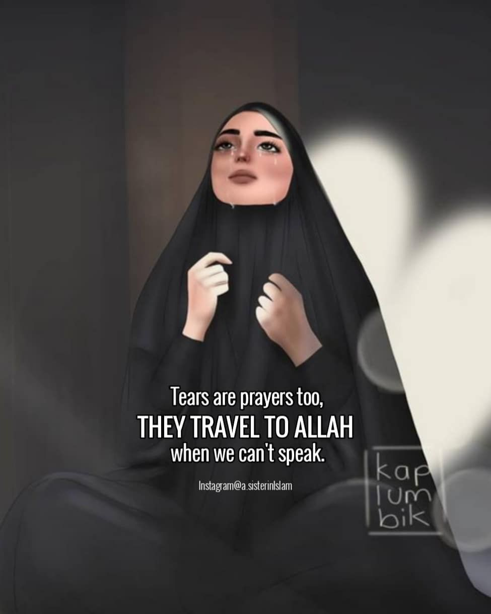

Tafakur Hijrah "Tak perlu sibuk menghias diri demi pasangan ridho
ilahi, yang terpenting sibukkan diri memperbaiki iman hati karna tak
akan pernah tahu siapa yang akan datang lebih dini, Dia yang selalu
dinanti atau malaikat sang penghapus jiwa raga diri."/selfreminder
Keep Hamasah "Aku tidak pernah mengkhawatirkan apakah doaku akan dikabulkan atau
tidak, tapi yang lebih aku khawatirkan adalah ketika aku tak diberi
hidayah untuk terus berdoa (Umar Bin Khattab)"/selfreminder
La Tansa "Sebuah pengingat untukmu dan khusus untukku. Entah mati
dalam keadaan kaya atau miskin, tapi baju terakhir yg dikenakan hanyalah
selembar kafan, dan yang dibawa hanya amal perbuatan. Tak memandang
harta hasil warisan atau usaha menghasilkan kemakmuran semua akan
bertemu dengan kematian yang lebih pasti dari kesuksesan.
Apapun yang diberikan hanyalah sebuah titipan, hingga tiba saatnya akan
dikembalikan. Selagi nafas masih diberi kesempatan maka berlomba-lombalah
dalam kebajikan, Buatlah tersenyum kepada sang PEMILIK KEKUASAAN sebelum
semuanya terlewatkan. Marilah berbenah diri, Allah bukan melihat sebanyak
apa uang yang dipunyai tetapi sebanyak apa amal baik yang dikerjai."
/selfreminder
Love Story About Ash-Shalah "Bila sholat dianggap sebagai penggugur
kewajiban, maka akan terburu-buru dalam pelaksanaan. Bila sholat dianggap
sebuah keharusan maka takkan ditemukan kehadiran Allah SWT dalam mengerjakan.
Maka anggaplah sholat sebagai pertemuan akan hadirnya sang pencipta tepat
dihadapan, dan anggaplah sholat sebagai cara terbaik untuk bercerita
ketika kehidupan mengalami kepahitan maupun kebahagiaan. Bayangkan ketika
Azan Allah melambaikan tangan, bayangkan ketika rukuk Allah menopang badanmu
hingga terjatuh dan merasakan damainya sentuhan, bayangkan ketika sujud
Allah mengelus kepalamu, aku mencintaimu hambaku itulah yang IA katakan,
bayangkan ketika duduk diantara dua sujud Allah berdiri dengan gagah
dihadapan dan mengatakan AKU takkan pernah diam jika kau mengalami
kesengsaraan. MashaaAllah, nikmat mana lagi yang patut didustakan dan
beruntunglah orang-orang yang mengamalkan."
/selfreminder
Al-Hayaa' "Aku malu, malu ketika bermkasiat tapi Engkau tetap lemah
lembut kepadaku, malu ketika aku telah durhaka kepadaMu tapi Engkau masih
terus menutup aib-aib busukku, aku malu duhai Rabbku, ketika aku melalaikan
kewajibanku tapi engkau masih menegur ku dengan mendekatkanku kepada
orang-orang shaleh. Aku malu, disaat aku masih berjalan untuk menujuMu
tapi Engkau sudah berlari mendekatiku, disaat aku memegang tanganMu tapi
Engkau justru memelukku. Duhai Allah, Ampunkan lah aku. Aku yang imannya
sering tak tentu, nafsuku yang selalu menggebu, tapi Engkau selalu berkata
"Janganlah berputus asa wahai Hambaku dan teruslah mengingatKu, Aku akan selalu bersamamu".
/selfreminder

Baki 'Ala Nafs "Menangislah. Menangis jika itu menyelesaikan
masalah. Menangislah disetiap hamparan sajadah. Ceritakan saja,
ceritakan semua tentang keluh kesah dan bahagia kepada sang Maha
Pemurah. Aduhkanlah, aduhkan saja kepadaNYA sebab ia memahami
disetiap doa. Meski tak mampu untuk berkata-kata, tapi percayalah
IA mengerti isi hati meski hanya lewat air mata. Ingat, bahwa iman
bisa lemah, istiqomah bisa goyah, kecewa sesuatu yang biasa dan
sedih hal yang lumrah yang terpenting jangan berputus asa. Teruslah
melanjutkan langkah bahwa sejatinya keyakinan tak boleh patah, karena
Allahlah sebaik-baik tujuan Akhirat-Dunia. Jadi jangan pernah sekalipun
untuk berbalik arah. Sungguh, Allah mencemburui hati yang berharap
kepada selain DIA".
/selfreminder
Assalamu'alaika Ya Habibii "Assalamu'alaika ya Rasulallah,
Assalamu'alaika ya sofwatullah. Oh Allah, limpahkanlah rasa cintaku untk kekasihMU
tercinta Nabi Besar Muhammad SAW. Ringankanlah aku dalam mengerjakan
sunnah-sunnahnya. Izinkanlah... Izinkanlah aku bisa berkunjung ke makam beliau.
Izinkanlah aku untuk kelak bisa mendapat syafaat dari kekasihMU tercinta, izinkan kelak
aku bisa mendapat minum dari Telaga Nabi Muhammad, Izin\kanlah aku untuk bisa memandang wajah beliau,
Izinkanlah aku kelak bisa berteduh dibawah bendera Nabi Tercinta serta izinkanlah aku untuk bisa
berkumpul bersama orang-orang yang aku cintai di surga FirdausMU wahai sang Maha Rahim. Assalamua'alaika ya NabiAllah".
/selfreminder
Ad-Du'a "oh Allah, forgive all my sins :'(,
fulfill my prayers and grant my viewers and the muslims around the world
the opportunity to perform Umroh and Hajj soon,
لَبَّيْكَ اللَّهُمَّ لَبَّيْكَ لَبَّيْكَ لاَ شَرِيكَ لَكَ لَبَّيْكَ إِنَّ الْحَمْدَ وَالنِّعْمَةَ لَكَ وَالْمُلْكَ لاَ شَرِيكَ لَكَ
and may this pandemic will be ends. Wahai Sang Maha Razzaaq, semoga Engkau memampukan aku,
keluargaku, teman-temanku, para tetanggaku, dan seluruh umat muslim yang menginginkan
dengan segera ke BaitullahMU"./selfreminder
Ibtasim Wahmadillaah "Sepuruk apapun diri, sehancur apapun hati, dan selelah apapun pikiran ini.
Kau harus kuat dan jangan berputus asa, kamu punya Allah yang mengerti disetiap
keadaan yang terjadi, mendengar disetiap suara doamu setiap hari dan akan selalu ada dalam diri.
Burung sekalipun takkan pernah takut untuk hinggap pada dahan pohon yang rapuh. Sebab apa??
Sebab ia percaya bahwa keyakinan bukanlah pada dahan pohon yang kokoh tapi kepada sayap yang
telah Allah beri hingga ia bisa terbang tinggi. Jangan pernah menyerah dan teruslah berlari
untuk Kedua-Insan yang menanti hasil Jerih. Berusahalah dan jangan pernah tinggi hati"./selfreminder
Yaa Nafsi "Berfikirlah dengan cermat wahai diri, tetap tegak berdiri walau kerikil terjalani.
Ingatlah bahwa hidup ini lebih baik dibatasi dari yang tak penting lagi. Allah itu memberikan banyak jalan di hidup ini,
Allah juga yang memberikan jalan solusi. Ingat bahwa banyak mimpi yang harus diraih, banyak orang yg harus dibahagiai
terkhusus dua insan yg selalu mendoai. Tegarlah wahai diri, perjalanan ini memang bukanlah hal yang mudah untuk dilalui,
tapi harus tetap dinikmati sampai akhirnya bisa berproses kembali. Tetaplah menjadi bintang yg menyinari walau apapun yg terjadi.
May Allah always give us a wonderful day, and great year ahead. Be sprite and do our best".
/selfreminder
InshaaAllah "27 hri tersisa d penghujung tahun masehi
Tepat berakhir di 15 jumadil awal tahun hijriah yang Ia beri
Masih terus senantiasa berharap kpd sang Pengasih
Agar memberikan apa yang selama ini diharapi.
.
Semoga apa yg slma ini menjadi penantian
Akan Allah kabulkan
Yang penuh dgn kebahagiaan dan tak luput pula dri keberkahan
Dan terus memberikan sesama dalam kebermanfaatan
.
Yaa musabbibal asbaab (wahai tuhan yg menjadi penyebab semua sebab)
Yaa faatihal abwaab (wahai Tuhan yg membuka semua pintu")
Yaa sami'al aswaat (wahai Tuhan yg mendengar semua suara)
Yaa qaadhiyal haajaat (wahai Tuhan yg menunaikan semua hajat")
Ya mujiibad da'awaat (wahai Tuhan yg memperkenankan semua doa")
Ij'alna minan naajihiin (jadikanlah kami termasuk org yg berjaya dunia dan akhirat)."/selfreminder
~4-12-'20
Sabr & Syukr "Buat yang lagi mencari penyemangat, sebenarnya kita udah punya penyemangat yang abadi. Siapa? Yah, hanya antara diri sendiri dan Allah. It’s Ok kalau sesekali mau menangis, tentu itu sebuah respon yang alami dari diri buat healing kalo kita tuh udah capek banget. Tapi setelahnya kudu harus bangkit lagi, terus andalkan antara diri sendiri dan Allah. Karena hanya 2 itu yang menjamin untuk terus bertahan sampe detik ini. Gak semua orang bisa jadi kita, gak semua orang bisa bertahan di titik terendah, gak semua orang bisa bangkit lagi setelah jatuh, But We Made it. Dan jangan lupa Buat self reward karena sdh bisa terus bertahan untuk everysecond proses yang dialami ke diri dan muhasabah terus ke Allah. Gagal itu sangat diperlukan agar kita tahu arti sebuah “Proses”. Namun “Sukses” adalah sebuah keharusan. Sukses itu gk akan ada kalau gagal itu gak pernah muncul dalam hidup. Memperketat hubungan Vertikal denganNYA, dan jangan pula melupakan hubungan horizontal terhadap sesama. Yok Semangat Yokkk!!!"
“Rezeki itu berpihak pada yang aktif bergerak, Rezeki menjauh pada yang sering mencercah dan mengeluh”.
Semoga aku dan kamu, selalu di kelilingi mereka yang haus akan ilmu dunia dan agama…
*Tulisan ini khusus untukku, yang berusaha bangkit untuk belajar dan terus belajar! Semangat!!
BISMILLAH.
/selfreminder
~2-1-'22